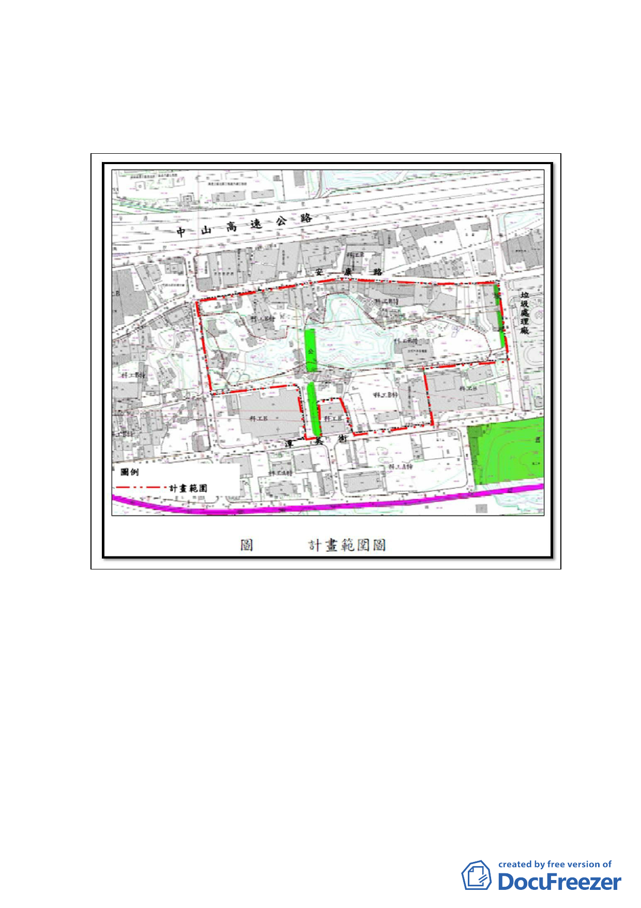

一、計畫位置：
本計畫範圍位於本市內湖區安康路、安康路228 巷、潭美街、
及安康路106 巷所圍街廓，即蘆洲里工業區內屬市地重劃開
發之地區。
二、計畫緣起：
(一) 市府為解決內湖蘆洲里附近工業區長期以來土地使用效益
不彰、更新開發速度緩慢導致環境品質低落等課題，並因應
本市整體產業環境變遷，傳統產業式微，前於100年8月29
日公告實施「變更臺北市內湖區蘆洲里附近工業區細部計畫
案」在案；案內以整體規劃及市地重劃方式調整適宜街廓規
模，並提供公共設施用地及開放空間。
(二) 蘆洲里工業區內原屬適用本市山坡地開發建築要點範圍地
區（即78.12.7「修訂內湖區葫洲里附近工業區細部計畫(第
2 次通盤檢討)案」，詳下圖），其中位於100.8.29公告之
市地重劃地區（案內市地重劃B區，使用分區為「科技工業
-5-